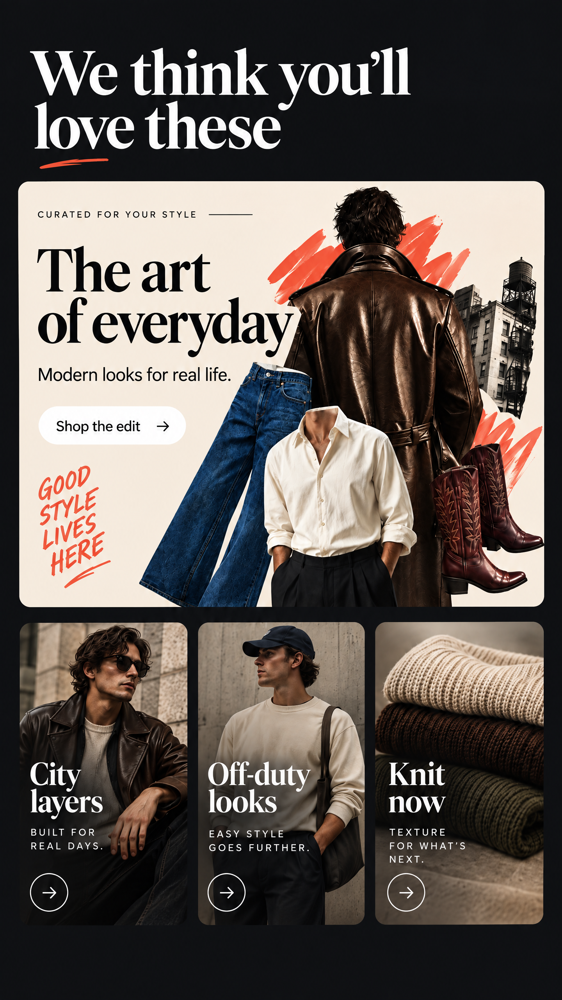

A · Editorial collage

Closest to the current component. One warm hero card, then three quick style tiles. Best when the section should feel like a natural continuation of the existing Today editorial system.
A placement-first review of the section as it exists in the Today feed — not a new page, not a new navigation pattern.
The section follows the current “Keep shopping for” rail and hands off into “Trending in your world.” That keeps the recommendation story personal, then returns the user to marketplace browsing.
It respects the code that is already there while giving the section a clearer job: turn a recommendation into a style story, then let the user shop the pieces without leaving the Today rhythm.
No changes yet to ranking, navigation, carousel behavior, or the social-share sheet.